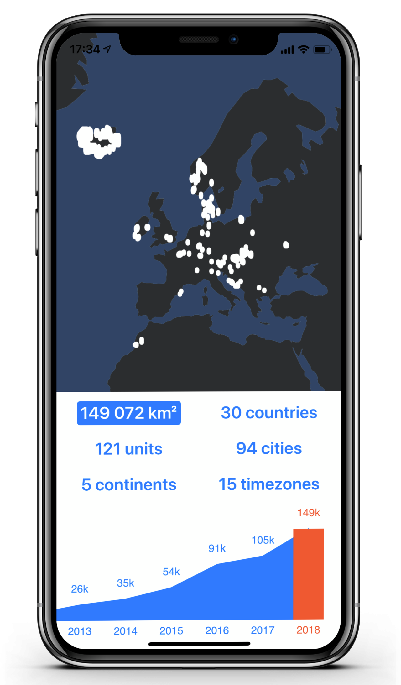

Seelog
Seelog is an iPhone app that reports statistics about your travels based on your geotagged photos.

Interesting Reports
Keep track of the continents, countries, cities, timezones and places that you visited. All statistics can be explored per each year and visualized on a map.
Zero Effort
Seelog takes all the information it needs from your photo library. No need for additional tracking or manual input.
Completely Private
Everything is computed and stays on your phone.